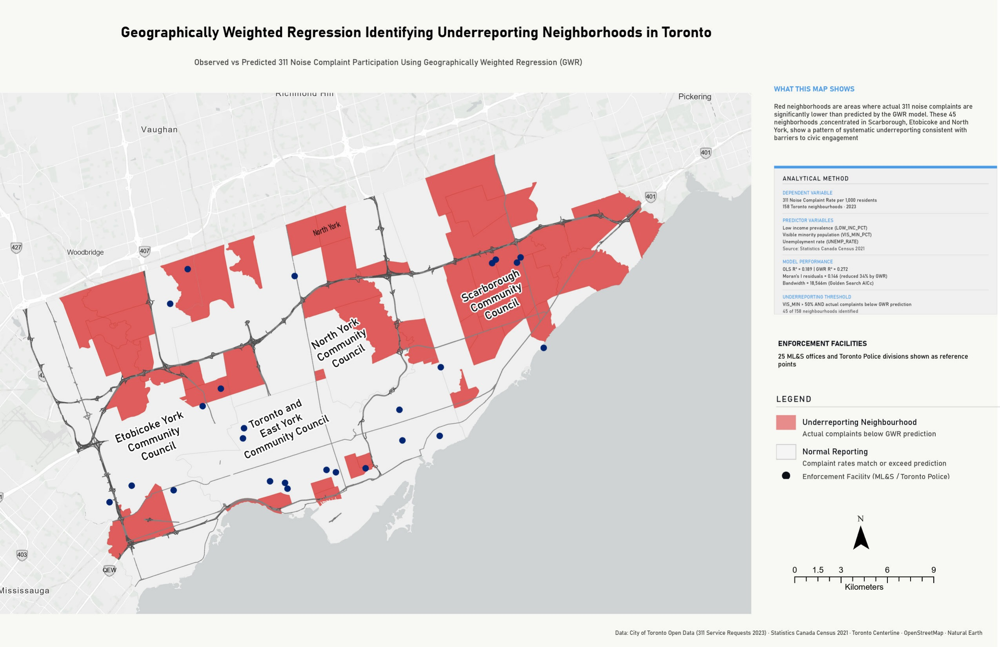
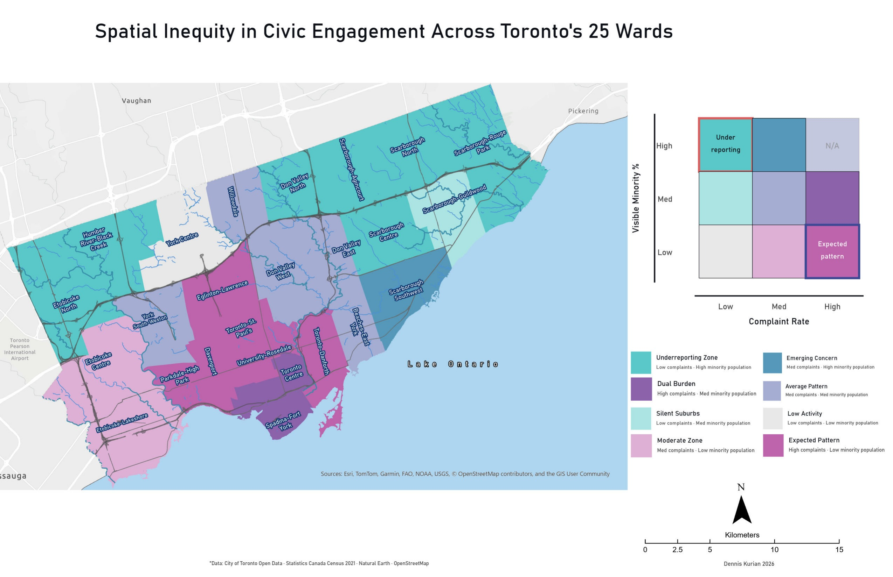
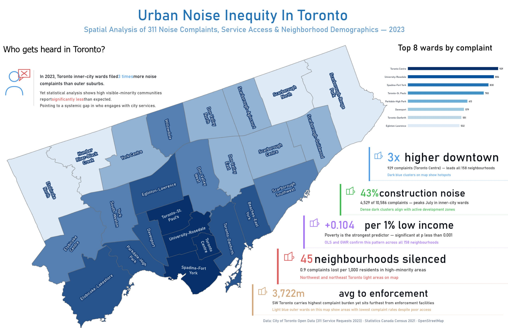
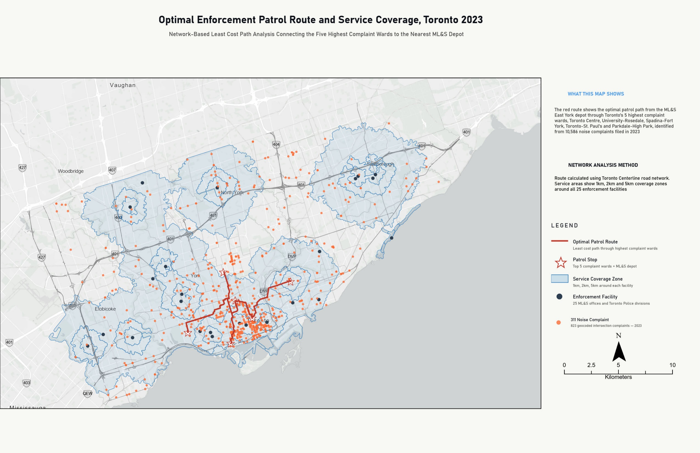

Urban Noise Inequity(self exploration) — City of Toronto
Spatial Analysis · 10,586 Noise Complaints · 2023

Urban Noise Inequity — Ward-level complaint distribution infographic
Noise complaint rates in Toronto are not simply a reflection of where noise occurs — they reflect underlying patterns of inequality. Communities with higher visible minority populations file significantly fewer complaints than statistical models predict.
3×
Higher downtown complaint rate
Toronto Centre — 929 complaints
45
Underreporting neighbourhoods
GWR residuals below model prediction
3,722m
Avg distance to enforcement
Road network distance per complaint
+0.104
Per 1% low income increase
p < 0.001 — confirmed OLS & GWR
- Phase 01Geocoding — 99.9% match rate (823/824 complaints)
- Phase 02Linear Referencing — Dynamic segmentation along centreline
- Phase 03Network Analysis — Closest Facility + Service Areas
- Phase 04OLS Regression — R²=0.189, 3 significant variables
- Phase 05GWR — R²=0.272, Moran's I reduced 34%
- Phase 06Least Cost Path — Optimal enforcement patrol route
- Phase 07KDE — 50m cell resolution, 20km bandwidth
- Phase 08Accessibility Scoring — 158 neighbourhoods
Neighbourhoods Infographic

Spatial Inequity in Civic Engagement

Urban noise inequity

Optimal Enforcement Patrol Route